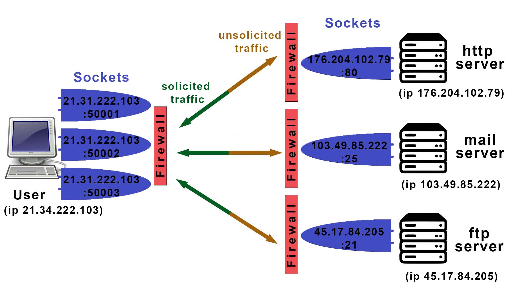

Updated ( 2020-03-02 / 2023-12-27 )
| Port Range | Description | |
|---|---|---|
| 0 | 1023 |
- Well-Known Ports (or System Ports) are registered ports for priviledged services - assigned by IETF (Internet Engineering Task Force) |
| 1024 | 49151 |
- Registered Ports (or User Ports) are registered for specific user services and can be requested to
register - assigned by IANA (Internet Assigned Numbers Authority) |
| 49152 | 65535 |
- Dynamic Ports (or Private Ports) are free to use - applications use these ports for temporary connections |
| Port | Description | ||
|---|---|---|---|
| IPv4_address:portId | IPv4 port | ||
| [IPv6_address]:portId | IPv6 port | ||
| Port Types | |||
| 0 | 1023 |
- Well-Known Ports (or System Ports) are registered ports for priviledged services - assigned by IETF (Internet Engineering Task Force) |
|
| 1024 | 49151 |
- Registered Ports (or User Ports) are registered for specific user services and can be requested to register - assigned by IANA (Internet Assigned Numbers Authority) |
|
| 49152 | 65535 |
- Dynamic Ports (or Private Ports) are free to use - applications use these ports for temporary connections |
|
| Well-Known Ports | |||
| 20 | TCP | FTP | - (File Transfer Protocol) Data Transfer (historically used FTP Data Port) |
| 21 | TCP | FTP |
- (File Transfer Protocol) File transfer (Command Control port) - Historically there were 2 ports used, this one to login (control port), then another for the actual data transfer (20 by default) (the modern FTP used this port only) |
| 22 | TCP / UDP | SSH | - (Secure Shell) Asyncemtic encrypted login and control of a remote shell |
| 23 | TCP / UDP | Telnet | - Plain text transmission (unencrypted) |
| 25 / 587 / 2525 / 465 (secure) | TCP / UDP | SMTP | - (Simple Mail Transport Protocol) Email transmission protocol |
| 53 | TCP / UDP | DNS | - (Domain Name System/Service) |
| 67 | UDP | DHCP | - (Dynamic Host Configuration Procotol) Server |
| 68 | UDP | DHCP | - (Dynamic Host Configuration Procotol) Client |
| 69 | UDP | TFTP | - (Trivial File Transfer Protocol) Simpler version of FTP (port 20 / 21) |
| 80 | TCP | HTTP | - (Hyper Text Transfer Protocol) |
|
110 (unencrypted) 995 (encrypted) |
TCP | POP3 | - (Post Office Protocol version3) Email protocol |
| 123 | UDP | NTP | - (Network Time Protocol) Time synchronization |
| 139 | TCP | SMB | - (Service Message Block) run on top NetBIOS |
| 161 / 162 | TCP / UDP | SNMP | - (Simple Network Management Protocol) = Gathers Network Infromations |
| 194 | TCP | IRC | - (Internet Relay Chat) |
| 389 | TCP / UDP | LDAP | - (Lightweight Directory Access Protocol) Authentication and directory access control protocol (Used by Domain Controllers (like Active Directory)) |
| 443 | TCP | HTTPS | - (Hyper Text Transfer Protocol Sercure) |
| 445 | TCP | SMB | - (Service Message Block) Shared access to files, printers and serial ports (mainly used by Windows) |
| 554 | UDP | RTSP | - (Real Time Streaming Protocol) |
| 631 | TCP / UDP | IPP | - (Internet Printing Protocol) = Client to Printer connection |
| 993 | TCP | IMAPS | - (Internet Message Access Protocol Secure) Mail transmission |
| 3389 | TCP / UDP | RDP | - (Remote Desktop Protocol) Designed for Windows-base remote desktop access |
| 8080 | TCP / UDP | - Secondary Web Service | |
- the IP address identifies a device on the network, the IP port identifies the service|application within the system (host)
- an IP Port is a 16bit service identifier placed at the end of IP addresses (ports work the same way for both IPv4 and IPv6)
- IP Ports allow network traffic to multiple applications within the system
IPv4_address:portId // IPv4 port
[IPv6_address]:portId // IPv6 port
31.13.71.36:80 // IPv4 port
[2a03:2880:f112:83:face:b00c:0:25de]:80 // IPv6 port
- A Sockert is basically a communication endpoint (IP Address + Port), identifies a device on the network and one service|application within that device
